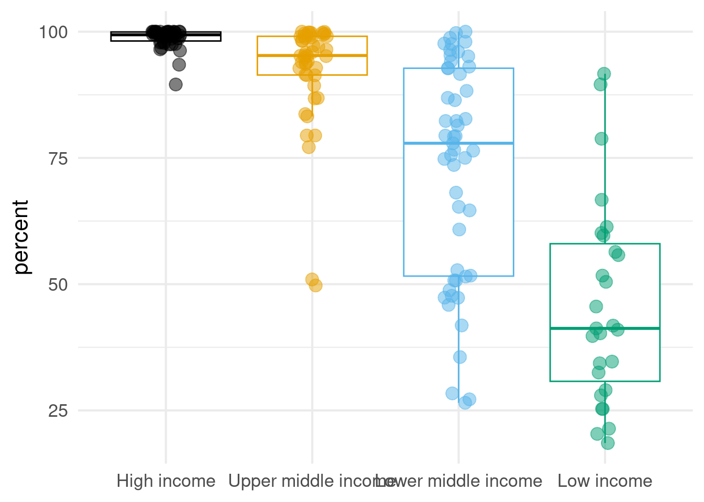
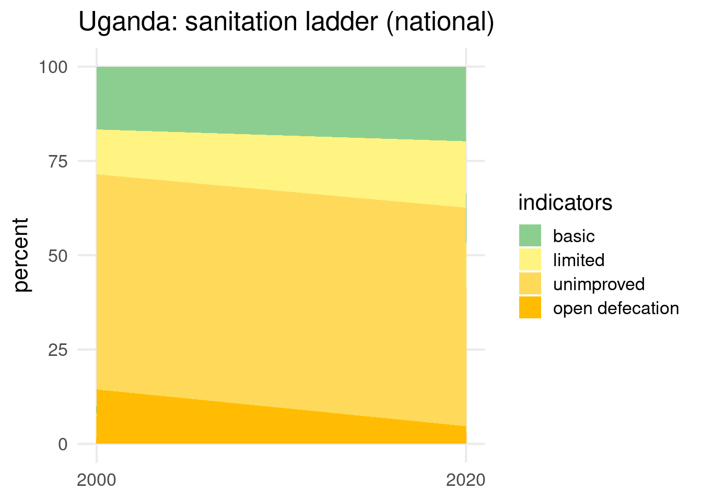

library(jmpwashdata)
library(tidyverse)
library(gt)
library(ggthemes)Hello, Quarto
R Package jmpwashdata
For this analysis we will use the jmpwashdata R Package. The package contains all data compiled by the WHO/UNICEF Joint Monitoring Programme (JMP).
World Bank income groups
We will also use the World Bank income classification for 218 countries. This data was downloaded and stored as an XLSX file using an R script in src.
income_groups_df <- read_rds("data/wb-income-groups.rds")Basic Sanitation & GDP
Data for the most recent year, basic sanitation in urban areas, calculate urban population, and join income groups.
# Perform data manipulation operations on the jmp_wld_sanitation data frame
jmp_wld_sanitation_gdp_income <- jmp_wld_sanitation |>
# Filter the rows where the year column is equal to the maximum year value
filter(year == max(year)) |>
# Select the columns from name to prop_u and the san_bas_u column
select(name:prop_u, san_bas_u) |>
# Create a new column named pop_u
mutate(pop_u = pop_n * 1000 * prop_u / 100) |>
# Drop the pop_n and prop_u columns
select(-pop_n, -prop_u) |>
# Perform a left join with the income_groups_df data frame
left_join(income_groups_df) |>
# Drop the rows that have missing values in the san_bas_u & income_group cols
drop_na(san_bas_u, income_group)Joining with `by = join_by(iso3)`Basic Sanitation Uganda
# Create a vector of color codes
color_scale_sanitation <- c("#8cce8f", "#fff381", "#ffda5a", "#ffbc02")
# Create a vector of sanitation indicators
fct_sanitation <- c("basic", "limited", "unimproved", "open defecation")
# Perform data manipulation operations on the jmp_wld_sanitation data frame
jmp_uga_sanitation <- jmp_wld_sanitation |>
# Filter the rows where the iso3 column is equal to "UGA" and the year column
# is equal to 2000 or 2020
filter(iso3 == "UGA") |>
filter(year == 2000 | year == 2020) |>
# Select the name, iso3, year, and columns from san_bas_n to san_od_n
select(name, iso3, year, san_bas_n:san_od_n) |>
# Reshape the data frame from wide to long format
pivot_longer(cols = san_bas_n:san_od_n,
names_to = "indicator",
values_to = "percent") |>
# Rename the indicator column based on the values of the san_bas_n to san_od_n
# columns
mutate(indicator = case_when(
indicator == "san_bas_n" ~ "basic",
indicator == "san_lim_n" ~ "limited",
indicator == "san_unimp_n" ~ "unimproved",
indicator == "san_od_n" ~ "open defecation"
)) |>
# Convert the indicator column to a factor with levels specified by the
# fct_sanitation vector
mutate(indicator = factor(indicator, level = fct_sanitation))Income
Below is a box- and jitterplot of countries with percentages of populations with access to basic sanitation in 2020 grouped by income classifications.
ggplot(data = jmp_wld_sanitation_gdp_income,
mapping = aes(x = income_group,
y = san_bas_u,
color = income_group)) +
geom_boxplot(outlier.shape = NA) +
geom_jitter(width = 0.1, size = 4, alpha = 0.5) +
labs(x = NULL, y = "percent") +
scale_color_colorblind() +
theme_minimal(base_size = 16) +
theme(legend.position = "none")
Regions
The table below shows urban sanitation indicators for global regions in 2020.
jmp_reg_sanitation |>
filter(year == max(year)) |>
filter(!str_detect(region, "income")) |>
select(region, san_bas_u:san_od_u) |>
drop_na() |>
gt(rowname_col = "region") |>
cols_label(
san_bas_u = md("**basic**"),
san_lim_u = md("**limited**"),
san_unimp_u = md("**unimproved**"),
san_od_u = md("**open defecation**")
) |>
fmt_percent(columns = san_bas_u:san_od_u,
decimals = 0,
scale_values = FALSE) | basic | limited | unimproved | open defecation | |
|---|---|---|---|---|
| Central and Southern Asia | 79% | 17% | 3% | 1% |
| Eastern and South-Eastern Asia | 95% | 3% | 2% | 1% |
| Europe and Northern America | 99% | 1% | 1% | 0% |
| Latin America and the Caribbean | 93% | 4% | 3% | 0% |
| Northern Africa and Western Asia | 95% | 2% | 2% | 0% |
| Oceania | 71% | 9% | 17% | 3% |
| Sub-Saharan Africa | 46% | 32% | 17% | 5% |
| Fragile or Extremely Fragile | 62% | 22% | 13% | 3% |
| Least Developed Countries | 48% | 29% | 20% | 4% |
| Landlocked Developing Countries | 62% | 22% | 14% | 2% |
| Small Island Developing States | 83% | 10% | 5% | 2% |
| World | 88% | 8% | 3% | 1% |
Uganda
The figure below shows the sanitation ladder for Uganda.
ggplot(data = jmp_uga_sanitation,
mapping = aes(x = year,
y = percent,
fill = indicator)) +
geom_area() +
labs(title = "Uganda: sanitation ladder (national)",
x = NULL, y = "percent", fill = "indicators") +
scale_fill_manual(values = color_scale_sanitation) +
scale_x_continuous(breaks = c(2000, 2020)) +
theme_minimal(base_size = 16) +
theme(panel.grid.minor = element_blank()) 